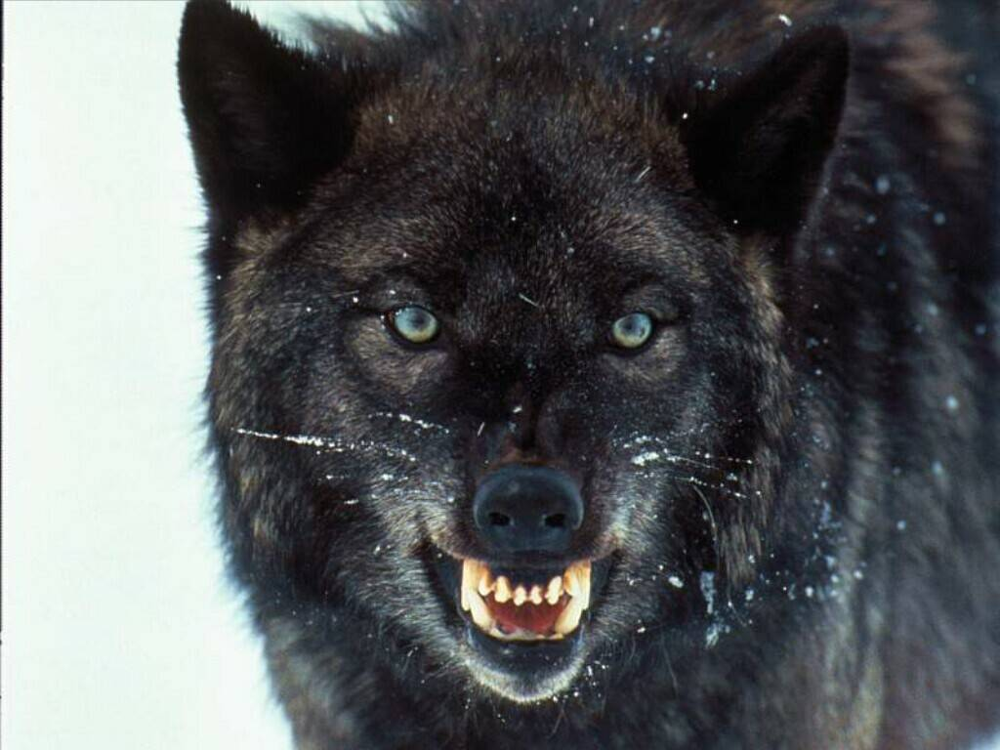

Innerlijke Schweinhund in Groningen
onze verslaggever ter plaatse
26-11-2004

Komend weekend wordt in Groningen alweer voor de zoveelste keer sinds Frans Gobel een klein jongetje was de Hel van het Noorden verroeid. Naar het schijnt zal er naast kille kou en windige wind nog een ander element roet in het eten komen gooien. Om uit te zoeken wie of wat dit is zonden wij een verslaggever ter plaatse.
Groningen in de winter. Je wordt er niet vrolijk van, raadselachtig waarom mensen gaan wonen in plaatsen als: Finsterwolde, Harkstede, Paterswolde, Luddeweer, Stidswerd en Woltersum. Zeker in de winter is het hier een gouden business voor cafehouders en slijterijen.
Wij zijn op zoek naar een persoon die in de omstreken van het Eemskanaal is gesignaleerd, hij schijnt rond te hangen in de treurige dorpjes en gehuchten van noordoostelijk Groningen. Al snel is het raak; wij treffen een geheimzinnig figuur en spreken hem aan; het is de Innerlijke Schweinhund.
"Jah, wie ich so hier gekommen bin? Nah, ich was im Randstad en voelde mij daar niet mehr erg op mein gemak. Und ich wist hier die Regatta. So, bin hier gekommen um die mensen uit evenwicht te brengen. Ich houdt er van um menschen hun swachheden te ontdekken en hen erop te wijzen. Iedereen heeft zwaktes en die spoor ik op haal die naar oben en breng die aan het licht. Das finde ich schon. Zum beispiel vrouwen die zich te dik vinden die laat ik dan toch die ene chocolade eten. Of studenten die op moeten staan voor school laat ik dan nog lekker een keer opdraaien en zo te laten doorslapen. Of die mensen die ergens heen moeten maar geen zin hebben, dan laat ik het eventjes rgenen en ze zitten meteen te janken. Of lichtepikken die bijna op gewicht sein, die laat ich dan toch naar die MacDonalds rijden. Jah das du ich gerne ja. Und daarum bin ich hier um nach 4000m wedstrijd zu te slaan, hehe."